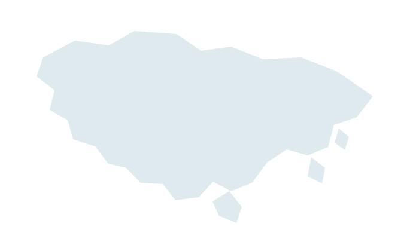

策略與規劃
Strategy & Planning
協助客戶掌握城市、目的地、土地、投資與基礎建設的發展機會，形成可執行的策略與發展方向。
Cities · Destinations · Land · Investment · Infrastructure
了解策略與規劃 →城市發展｜策略規劃｜數位解決方案
Urban Development · Strategy · Digital Solutions
Strategy & Planning
協助客戶掌握城市、目的地、土地、投資與基礎建設的發展機會，形成可執行的策略與發展方向。
Cities · Destinations · Land · Investment · Infrastructure
了解策略與規劃 →Digital & AI Solutions
將專業知識、工作流程與決策需求，轉化為實際可用的數位工具、自動化流程與 AI 系統。
Knowledge · Workflow · Automation · Decisions · Products
了解數位與 AI 解決方案 →